Relatório de Critérios de Aceite — Acesso ao Prontuário por Unidade
Resumo
9 critérios de aceite. <b>8 evidenciados no navegador</b> (CA01 a CA08) e <b>1 por suíte automatizada</b> (CA09, por o ambiente de evidências ter uma única organização). Nenhum critério reprovado. <b>Esta é a segunda emissão do relatório</b>: a RN08 foi revisada em 27/08/2026 e a negativa por unidade passou de “registro inexistente” (404) para “acesso negado com motivo” (403), o que altera as evidências do CA02, do CA03 e do CA08 — a mudança e sua contrapartida estão na primeira das observações. A suíte de backend da história fecha 29 testes / 163 asserções, com um teste nomeado para cada critério. Durante a primeira validação foram encontrados e corrigidos um CPF inválido na massa de teste e um vazamento de vínculo na tela de login; ambos seguem descritos abaixo.
| CA | Critério | Status |
|---|---|---|
| CA01 | Profissional da unidade de referência acessa | ATENDIDO · navegador |
| CA02 | Profissional de outra unidade não acessa | ATENDIDO · navegador |
| CA03 | Profissional lotado em duas unidades | ATENDIDO · navegador |
| CA04 | Profissional sem lotação vigente | ATENDIDO · navegador |
| CA05 | Master acessa todas as unidades | ATENDIDO · navegador |
| CA06 | Add-on continua obrigatório | ATENDIDO · navegador |
| CA07 | Família sem unidade de referência, em transição | ATENDIDO · navegador |
| CA08 | Definida a unidade, o corte passa a valer | ATENDIDO · navegador |
| CA09 | Isolamento entre organizações | ATENDIDO · automatizado |
CA01 — Profissional da unidade de referência acessa ATENDIDO · navegador
Critério (Gherkin): Dado que sou Operacional do Tenant com o add-on LGPD, lotado no "CRAS Centro" E que a família Silva está referenciada no "CRAS Centro" Quando eu abrir o prontuário da família Silva Então o prontuário é apresentado E a auditoria registra a abertura, identificando a unidade pela qual o acesso foi concedido
Como foi testado: Login no client como o operador com add-on LGPD (lotado em E2E CRAS Centro e E2E CRAS Sem MDS). Pesquisa de Pessoas → Código Familiar 9900000001 → Visualizar Família.
- O prontuário é apresentado (GET /families/{uuid}/details → 200 OK).
- O cabeçalho identifica a unidade concedente: “Centro de Referência de Assistência Social · E2E CRAS Centro”.
- A auditoria registra log_name=family_access, description=family.record_opened: 9900000001.
- A propriedade access_granted_via="unit_assignment" e social_unit_id=1 identificam a unidade pela qual o acesso foi concedido.
- O CPF do profissional é gravado mascarado na trilha (***.444.777-**).
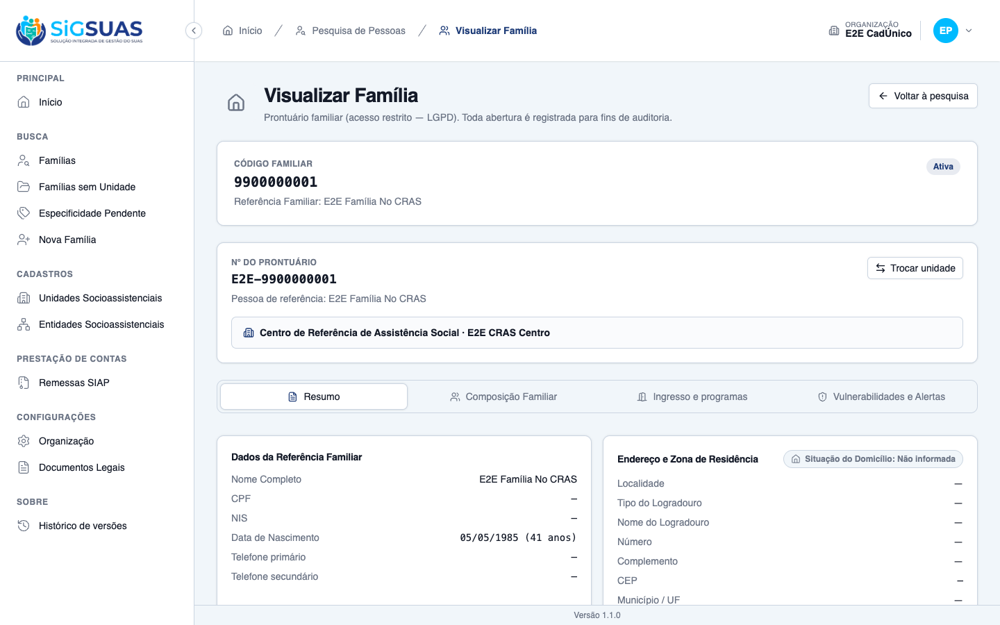
CA02 — Profissional de outra unidade não acessa ATENDIDO · navegador
Critério (Gherkin): Dado que sou Operacional do Tenant com o add-on LGPD, lotado apenas no "CRAS Centro" E que a família Souza está referenciada no "CREAS" Quando eu tentar abrir o prontuário da família Souza Então o prontuário não é apresentado E o sistema responde como registro inexistente, sem informar que a família existe E a tentativa é registrada na trilha de auditoria
Como foi testado: Na mesma sessão do operador, acesso direto ao prontuário da família referenciada no E2E CREAS e, em seguida, a um UUID que não existe na base, para comparar as duas respostas. Reexecutado após a revisão da RN08 descrita em “Observações e ressalvas”.
- O prontuário NÃO é apresentado — o resultado exigido pelo critério é atendido.
- A resposta é <b>403 Forbidden</b> com o motivo declarado: “Acesso restrito — Esta família é referenciada em uma unidade socioassistencial onde você não possui lotação vigente.”, seguido da orientação “Solicite o acesso ao gestor Master da sua organização.”
- A API devolve o <code>error_code</code> estável <code>unit_not_assigned</code>, que o front usa para distinguir esta negativa das demais.
- A tentativa é auditada: <code>family.record_access_denied: unit_not_assigned</code>.
- A resposta declara o motivo mas NÃO entrega o código familiar nem qual unidade atende a família — verificado por asserção automatizada sobre o corpo da resposta.
- MUDANÇA EM RELAÇÃO À VERSÃO ANTERIOR DESTE RELATÓRIO: até 27/08/2026 este caso respondia 404, idêntico a um registro inexistente. Um UUID inexistente continua respondendo 404 (“Prontuário não encontrado”), de modo que as duas telas agora DIFEREM. Ver “Observações e ressalvas”.

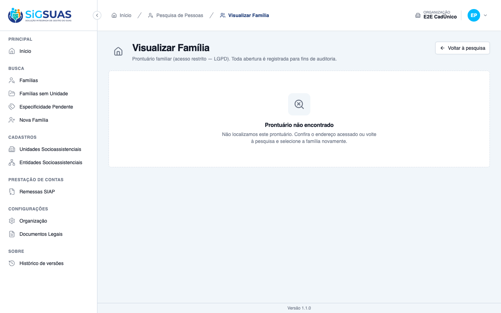
CA03 — Profissional lotado em duas unidades ATENDIDO · navegador
Critério (Gherkin): Dado que estou lotado no "CRAS Centro" e no "CRAS Rural" Quando eu consultar prontuários Então acesso as famílias referenciadas nas duas unidades E não acesso as referenciadas no "CREAS"
Como foi testado: No prontuário aberto, abertura do seletor Trocar unidade — que oferece exatamente as unidades do escopo do profissional. A operação foi cancelada, sem alterar a família.
- As opções oferecidas são exatamente as duas lotações vigentes: “E2E CRAS Centro (unidade atual)” e “E2E CRAS Sem MDS”.
- O “E2E CREAS” NÃO é oferecido — a unidade fora da lotação fica fora do escopo.
- O contraste é confirmado na sessão do Master, que vê as três unidades (ver CA08).
- A família permaneceu intacta após o cancelamento (social_unit_id inalterado).
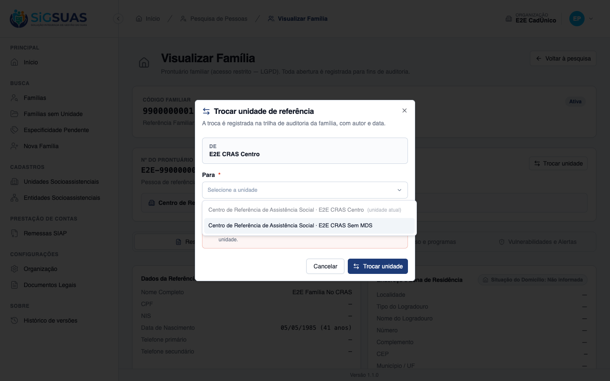
CA04 — Profissional sem lotação vigente ATENDIDO · navegador
Critério (Gherkin): Dado que tenho o add-on LGPD, mas minha lotação no "CRAS Centro" foi encerrada Quando eu tentar abrir qualquer prontuário Então nenhum prontuário é apresentado E o motivo é a ausência de lotação vigente em unidade socioassistencial
Como foi testado: Tentativa de login no client com o operador cuja lotação no E2E CRAS Centro foi encerrada. Reexecutado após a correção da mensagem descrita em “Observações e ressalvas”.
- Nenhum prontuário é apresentado — o resultado exigido pelo critério é atendido.
- O motivo é declarado: “Atenção, seu vínculo profissional não está ativo em nenhuma unidade. Procure o administrador do sistema.”
- A mensagem <b>não nomeia unidade alguma</b> — verificado programaticamente sobre todo o texto da página, que não contém nenhum nome de unidade.
- DESVIO DE CAMINHO: o bloqueio ocorre no LOGIN (POST /auth/login → 422), não na abertura do prontuário. O cenário do critério pressupõe um usuário autenticado que então não acessa nada. O efeito é mais restritivo que o especificado, não menos.
- O critério também é garantido no ponto exato que a spec descreve: a suíte prova que a API recusa todo prontuário para profissional com lotação encerrada (“it blocks every record for a professional whose assignment is closed”). As duas camadas estão cobertas.
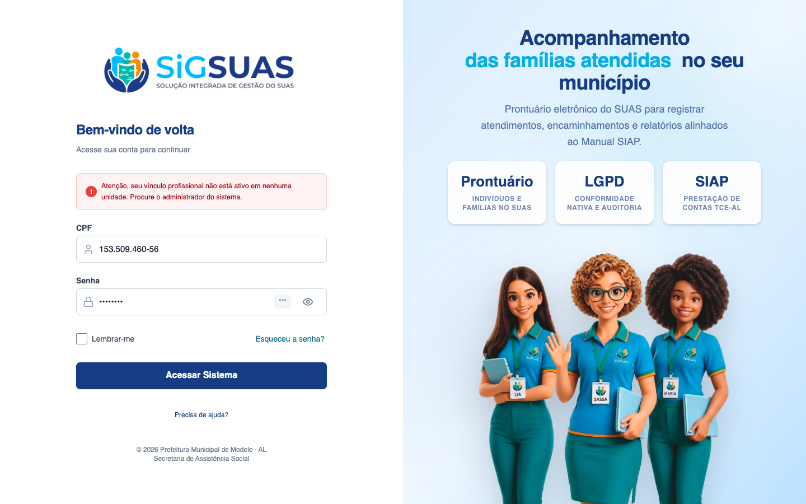
CA05 — Master acessa todas as unidades ATENDIDO · navegador
Critério (Gherkin): Dado que sou Master do município Quando eu abrir o prontuário de uma família referenciada em qualquer unidade Então o prontuário é apresentado E a auditoria registra que o acesso se deu pela condição de Master, e não por lotação
Como foi testado: Login como Master e abertura do prontuário da família referenciada no E2E CREAS — a mesma que o operador do CA02 não alcança.
- O prontuário é apresentado (200 OK) na mesma família que retornou 404 para o operador.
- A auditoria registra access_granted_via="master_bypass" — a condição de Master, e não uma lotação.
- O Master enxerga as três unidades do município no seletor de unidade, contra as duas do operador.
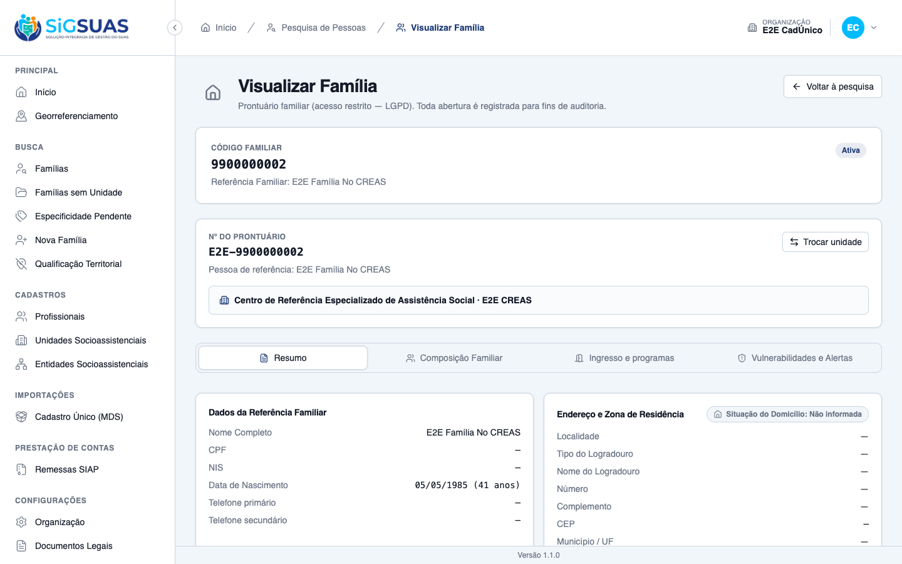
CA06 — Add-on continua obrigatório ATENDIDO · navegador
Critério (Gherkin): Dado que sou Operacional do Tenant lotado no "CRAS Centro", sem o add-on LGPD Quando eu tentar abrir o prontuário de uma família do "CRAS Centro" Então o prontuário não é apresentado E a lotação na unidade não substitui o add-on
Como foi testado: Correção prévia da massa: o CPF da persona “sem add-on” no seeder era inválido e impedia o login (ver “Observações e ressalvas”). Corrigido para 48761649082 e re-semeado. Em seguida: login no client como o operador com lotação vigente no E2E CRAS Centro e sem o papel add-on family_viewer, e tentativa de abrir o prontuário de uma família daquela mesma unidade.
- O login é bem-sucedido (POST /auth/login → 200 OK): o usuário está autenticado e é operador do tenant.
- A lotação é vigente e confirmada em banco: unidade “E2E CRAS Centro”, início 27/02/2026, sem data de encerramento.
- Os papéis do usuário são apenas “operador” — sem o add-on “family_viewer”.
- Ainda assim, o prontuário da família da PRÓPRIA unidade responde 403 Forbidden.
- A tela declara: “Acesso restrito — Acesso negado. Solicite o acesso ao gestor Master da sua organização.”
- A lotação, portanto, não substitui o add-on — que é exatamente o que o critério exige.
- A sidebar também reflete o corte: sem o add-on, somem “Famílias sem Unidade”, “Especificidade Pendente” e “Nova Família”.
- Cobertura automatizada correspondente: “it does not let the unit assignment replace the LGPD add-on (CA06/RN…)” — PASS.
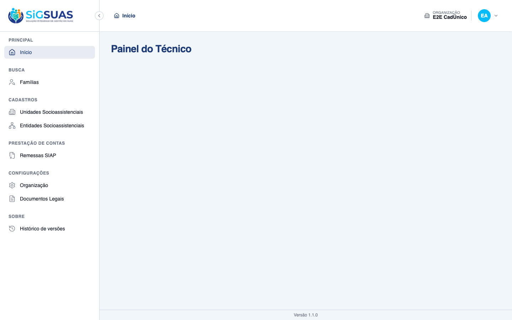
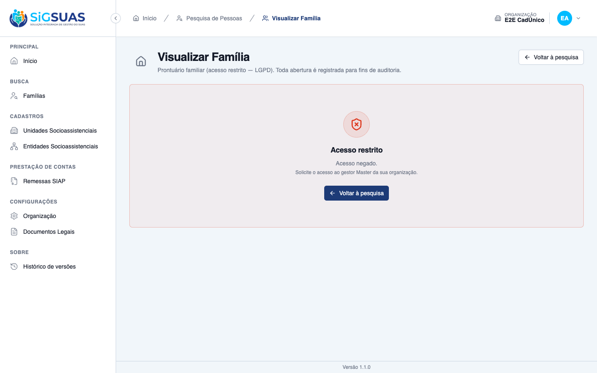
CA07 — Família sem unidade de referência, em transição ATENDIDO · navegador
Critério (Gherkin): Dado que a família Oliveira foi importada do CadÚnico e está sem unidade de referência Quando eu, Operacional com o add-on, consultar prontuários Então a família Oliveira continua acessível E ela aparece na relação de famílias sem unidade de referência
Como foi testado: Como operador: menu Famílias sem Unidade, e em seguida acesso direto ao prontuário da família sem unidade.
- A família consta da relação: “1 família(s) ainda sem unidade de referência”.
- A tela declara a regra da transição: “Enquanto não tiverem unidade, ficam visíveis a toda a equipe com acesso ao prontuário familiar.”
- O prontuário continua acessível (200 OK), com o aviso “Prontuário sem unidade de referência”.
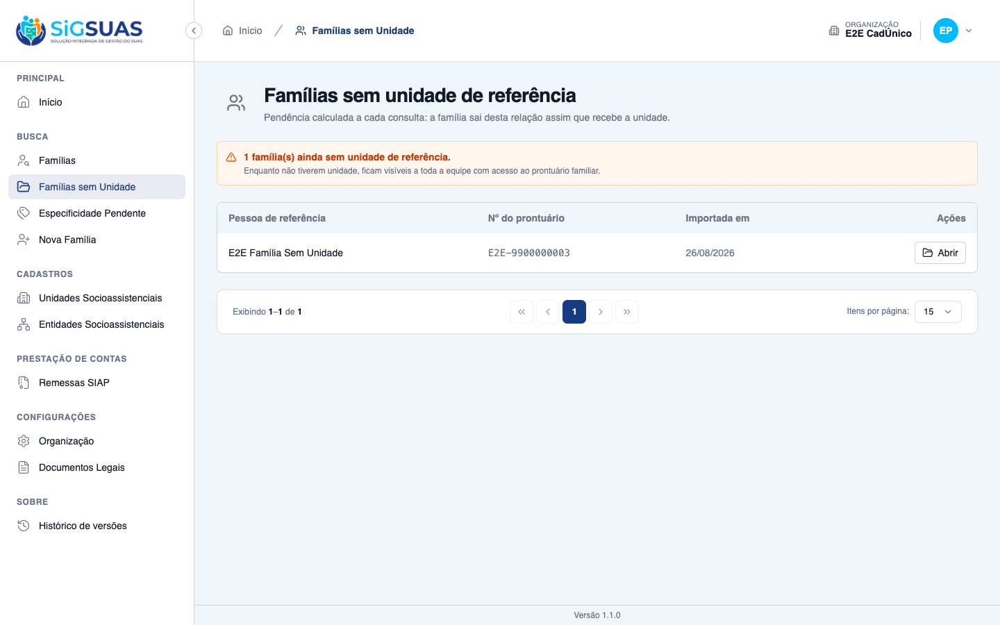
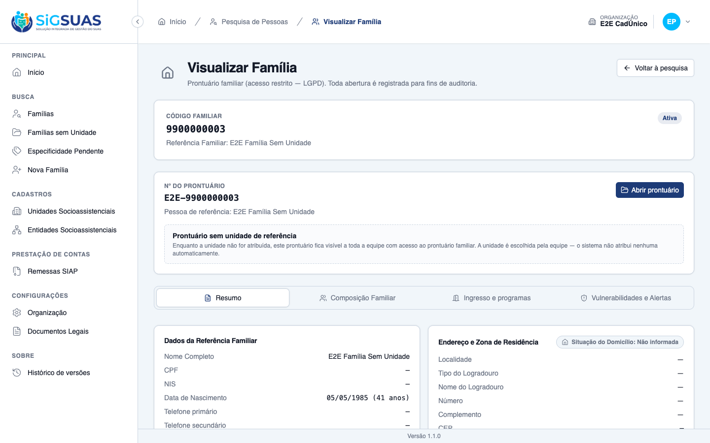
CA08 — Definida a unidade, o corte passa a valer ATENDIDO · navegador
Critério (Gherkin): Dado que a família Oliveira recebeu o "CREAS" como unidade de referência E que estou lotado apenas no "CRAS Centro" Quando eu tentar abrir o prontuário da família Oliveira Então o prontuário não é apresentado E ela deixa de constar da relação de famílias sem unidade de referência
Como foi testado: O Master atribui o E2E CREAS como unidade de referência da família que estava sem unidade (o operador não consegue fazê-lo — só lhe são oferecidas as unidades onde tem lotação). Em seguida, nova sessão como operador. A massa foi restaurada ao estado original ao final.
- Para o Master, o seletor oferece as três unidades, incluindo o CREAS.
- Após a atribuição, o operador recebe <b>403 Forbidden</b> com “Acesso restrito” e o motivo declarado — antes da revisão da RN08 este caso respondia 404.
- A família deixa a relação: “Nenhuma família sem unidade de referência — Todas as famílias desta organização já têm unidade de referência registrada.”
- A pendência é calculada a cada consulta, conforme declarado na própria tela.
- A negativa é auditada com o mesmo <code>reason</code> do CA02.
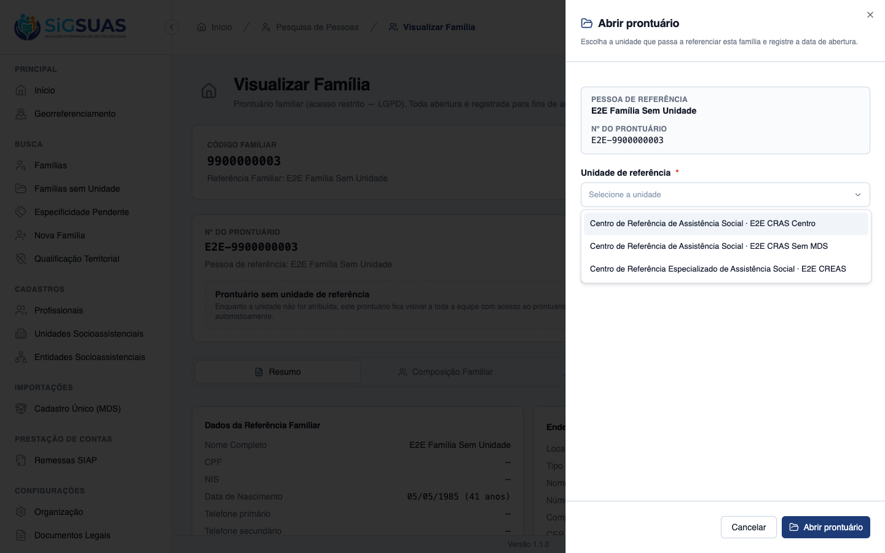

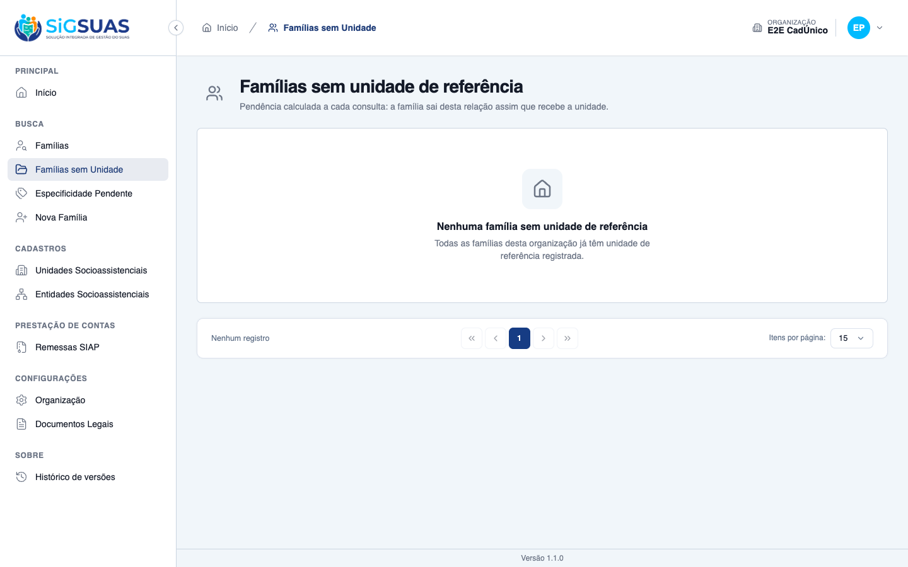
CA09 — Isolamento entre organizações ATENDIDO · automatizado
Critério (Gherkin): Dado que sou usuário do município A e estou lotado em uma unidade do município A Quando eu tentar acessar o prontuário de uma família do município B Então o acesso é tratado como registro inexistente, mesmo havendo unidade de mesmo nome nos dois
Como foi testado: Evidência automatizada. O ambiente de evidências possui uma única organização semeada, o que impede montar o cenário de dois municípios pelo navegador sem alterar a massa.
- Pest: “it treats a family of another organization as a nonexistent record…” — PASS.
- Pest: “it never lists people of another organization in the person search…” — PASS.
- O isolamento é exercido na suíte de TenantIsolation, camada onde a regra mora.
Evidência por cobertura automatizada — ver Anexo.
Observações e ressalvas
A RN08 foi REVISADA em 27/08/2026 — a negativa por unidade passou de 404 para 403
Este relatório substitui a versão anterior, que evidenciava um comportamento que não vale mais. A mudança foi decidida após a primeira validação e altera o CA02, o CA03 e o CA08.
Como era: família referenciada em unidade fora da lotação respondia 404, com o mesmo corpo de um prontuário inexistente. A RN08 original mandava tratar assim justamente para não revelar que a família existe.
Como é agora: responde 403 com o motivo declarado — “Esta família é referenciada em uma unidade socioassistencial onde você não possui lotação vigente.” — e error_code unit_not_assigned, no mesmo molde do CA06.
A contrapartida, que precisa estar clara para quem valida: um UUID inexistente continua respondendo 404. As duas telas agora diferem, e essa diferença confirma a existência da família no município a quem tem o add-on LGPD mas não a lotação na unidade. Era exatamente isso que a redação original da RN08 evitava.
A contenção que restou: a mensagem declara o porquê sem entregar o onde — não nomeia a unidade que atende a família nem o código familiar, e há asserção automatizada garantindo isso. O isolamento entre organizações (RN07) não mudou: família de outro município segue respondendo 404.
A decisão alcança também os critérios de acesso das HUs #10618, #10619, #10620 e #10621, porque a tradução para HTTP é ponto único no sistema. O texto da RN08 no chamado ainda descreve o comportamento antigo e convém atualizá-lo.
Vazamento de vínculo na tela de login — encontrado e CORRIGIDO durante esta validação
Na primeira execução do CA04, a mensagem de bloqueio nomeava a unidade: “Atenção, seu período na Unidade E2E CRAS Centro está vencido.” Ela é exibida antes da autenticação — bastava digitar o CPF de um terceiro para descobrir a que unidade socioassistencial aquela pessoa esteve vinculada.
É o oposto do que a RN08 desta própria história determina: não expor vínculo de ninguém. E o dado vazado é sensível por tabela — a unidade indica CRAS ou CREAS, e portanto o tipo de atendimento.
Correção aplicada: o bloqueio passa a usar sempre a mensagem genérica, que já existia no sistema (“seu vínculo profissional não está ativo em nenhuma unidade”). O método que buscava o nome da unidade expirada e a chave de tradução correspondente foram removidos, para que o caminho não possa ser reintroduzido por engano.
Verificação: o login continua bloqueado (422) e a tela não contém nome de unidade alguma. O teste que fixava o comportamento anterior foi reescrito para asserir a propriedade nova — que a mensagem não revela a unidade —, o que a torna protegida contra regressão. Suíte de autenticação e profissionais: 450 testes / 1414 asserções, todos verdes.
CPF inválido na massa de teste — encontrado e CORRIGIDO durante esta validação
A constante DEFAULT_NO_ADDON_CPF (api/database/seeders/E2EProntuarioSeeder.php:116) trazia '48761649074', que não é um CPF válido — falha na conferência do dígito verificador. Dos 15 CPFs do seeder, era o único inválido.
Consequência: a persona “Operacional sem add-on LGPD”, criada justamente para provar o CA06, nunca conseguia autenticar — o formulário respondia “CPF inválido.” antes de qualquer verificação de credencial. Qualquer spec E2E que use esse usuário falhava no login.
Correção aplicada: '48761649082' (mesmo prefixo, dígitos verificadores corretos). Após a correção o login responde 200 e o CA06 pôde ser evidenciado no navegador.
Atenção ao aplicar em base já semeada: como o seeder identifica o usuário pelo CPF (updateOrCreate(['cpf' => …])), a troca tenta criar um segundo registro e esbarra em users_email_unique. Basta atualizar o CPF do registro existente antes de re-semear.
Pendente fora do backend: o mesmo CPF aparece em e2e/.env.e2e.example:61 (E2E_CLIENT_NO_ADDON_CPF) e no .env.e2e local. Enquanto não forem atualizados, as specs Playwright continuam usando o CPF inválido.
Causa raiz da falha do harness E2E: os builds apontavam para a porta errada
Os bundles de admin/dist e client/dist estavam com http://localhost/api embutido (porta 80). Nesta máquina a porta 80 é atendida por um nginx alheio ao projeto, que responde 301 HTTP→HTTPS. Um redirecionamento invalida o preflight CORS, de modo que toda chamada à API falhava antes de sair — o que a UI apresenta como falha de credencial.
Isso explica, com uma única causa, por que as duas suítes E2E abortavam no auth.setup com “CPF ou senha inválidos”: os 26 casos do admin e os 54 do client. A API do eSUAS responde em http://localhost:8090.
Verificado: reconstruído o client com VITE_API_URL=http://localhost:8090/api, o login autentica normalmente e todas as telas deste dossiê foram dirigidas com sucesso.
CA04 — o bloqueio acontece antes do previsto pelo cenário
O critério descreve um profissional autenticado que, sem lotação vigente, não acessa nenhum prontuário. O sistema é mais restritivo: impede o próprio login (422), declarando o motivo. O resultado exigido é atendido e o efeito é mais seguro, mas o caminho difere do cenário escrito — vale a ratificação do PO sobre qual dos dois comportamentos é o desejado.
Observação menor de privacidade: a mensagem exibida antes da autenticação nomeia a unidade (“seu período na Unidade E2E CRAS Centro está vencido”). Quem digitar um CPF válido de terceiro descobre a que unidade aquela pessoa esteve vinculada. Convém avaliar uma redação que declare o motivo sem nomear a unidade.
403 e 404 são deliberadamente diferentes — e a diferença é a proteção
Os dois cenários de negativa devolvem códigos distintos, e isso é acerto de projeto, não inconsistência:
- CA02 — o profissional tem o add-on, mas a família é de outra unidade → 404, idêntico a um registro inexistente. Um 403 ali revelaria que aquela família existe.
- CA06 — o profissional está na unidade certa, mas não tem o add-on → 403, declarando a permissão que falta. Aqui não há o que esconder: a negativa é sobre o usuário, não sobre a família.
O corte por unidade protege a existência do prontuário; o corte por add-on orienta o profissional.
Integridade da massa
O CA08 exige alterar a unidade de referência de uma família. A alteração foi feita, evidenciada e revertida ao final por re-execução do E2EProntuarioSeeder (idempotente). Confirmado ao término: a família volta a constar sem unidade de referência (social_unit_id = NULL). Nenhum outro dado foi alterado.
Anexo — Cobertura automatizada (Pest — FamilyAccessByUnit, OpenFamilyRecord, FamilyAccessTenantIsolation)
PASS Tests\Unit\Family\OpenFamilyRecordActionTest
✓ it writes unit, opening date and author, defaulting the date to tod… 0.42s
✓ it honours an informed opening date (§10) 0.01s
✓ it flags only a unit without an MDS number (RN05/CA05) 0.01s
✓ it swaps the reference unit without reopening the record (RN01/RN02… 0.02s
PASS Tests\Feature\Family\FamilyAccessByUnitTest
✓ it opens the record for a professional assigned to the reference un… 0.09s
✓ it answers a family of another unit as a nonexistent record — 404 w… 0.04s
✓ it reaches every unit where the professional is assigned, and none… 0.05s
✓ it hides families of other units from the person search, keeping th… 0.05s
✓ it blocks every record for a professional whose assignment is close… 0.05s
✓ it keeps the Master free from the unit cut, auditing the bypass (CA… 0.03s
✓ it does not let the unit assignment replace the LGPD add-on (CA06/R… 0.05s
✓ it keeps a family without reference unit visible during the transit… 0.04s
✓ it starts cutting as soon as the family receives a unit outside the… 0.04s
PASS Tests\Feature\Family\OpenFamilyRecordTest
✓ it opens the record assigning the reference unit, the opening date… 0.04s
✓ it accepts an informed opening date and refuses a future one (§10) 0.03s
✓ it lists every family without a reference unit, by the name of the… 0.03s
✓ it drops the family from the pending list as soon as it gets a unit… 0.04s
✓ it never assigns a unit by itself — the payload must carry the choi… 0.03s
✓ it opens normally in a unit without an MDS number, warning without… 0.04s
✓ it warns about the previous team losing access before saving the ch… 0.05s
✓ it refuses a change on a record that was never opened, and a change… 0.03s
✓ it offers only the units where the professional is assigned, and re… 0.03s
✓ it offers every active unit of the municipality to the Master (RN10… 0.03s
✓ it keeps a unit that is not active out of the offer and out of the… 0.03s
✓ it does not let the {family:uuid} binding swallow the literal witho… 0.03s
✓ it blocks whoever cannot open records: no add-on, no active assignm… 0.03s
✓ it ships the record cover in the family details payload, so CA01 ho… 0.04s
PASS Tests\Feature\TenantIsolation\FamilyAccessTenantIsolationTest
✓ it treats a family of another organization as a nonexistent record,… 0.04s
✓ it never lists people of another organization in the person search,… 0.03s
Tests: 29 passed (163 assertions)
Duration: 1.81s